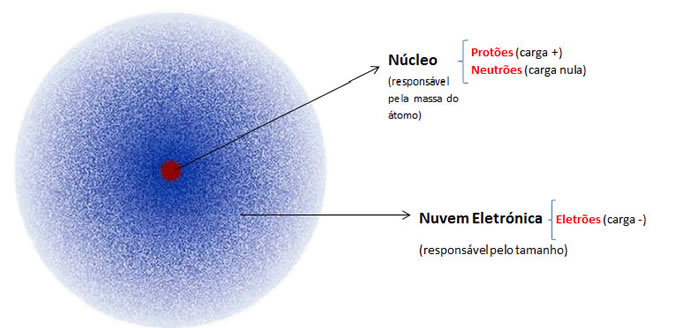
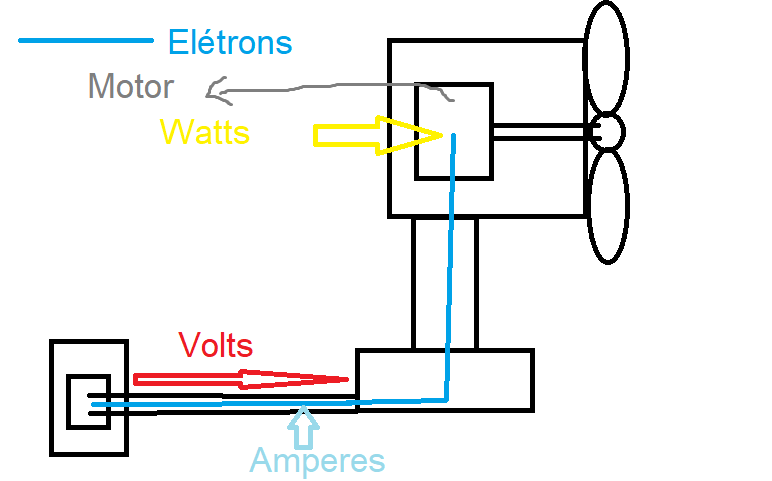
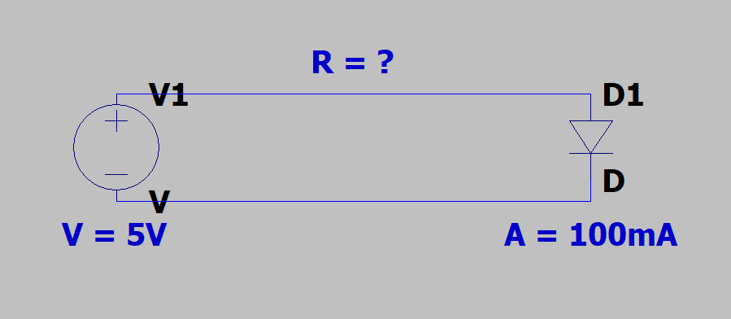
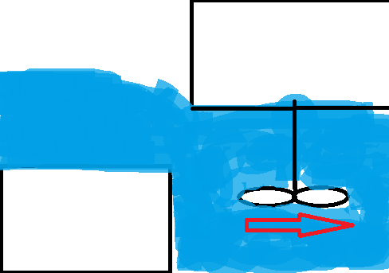

Lucas Costa, 2025
A energia eletrica fluindo em um cabo é eletrons, considerada partícula elemental pois não é composta por nada que conhecemos
atualmente, não é como um próton, que é composto por 2 quarks up e 1 quark down. Também é caracterizado por ser 1836 vezes menor
que um próton.
Características
Símbolo: e-
Carga elemental: -1e
Características quânticas - Não é um ponto com posição definida, e sim uma nuvem de possibilidades de lugares.

fig.1 nuvem de eletrons
Volts (V), é a 'força' que move os elétrons pelo cabo, ou seja, mais ou menos a velocidade dos mesmos.
Amperes (A), é a quantidade de elétrons que passa pelo cabo, 1A = 1Coulomb/s passando por um ponto no cabo, mais ou menos 6,242*1018 elétrons por segundo.
Watts (W), é a quantidade de energia transformada em trabalho por segundo.

fig.2 esquema volts x amperes x watts
Resistência (Ω), é a proporção de quanto o material deixa passar a energia.
A lei de Ohm diz o seguinte:
$$V = IR, I = \frac{V}{R}, R = \frac{V}{I}$$
Tensão é igual à corrente vezes resistência, e vice versa.

fig.3 Exemplo da Lei de Ohm
Para resolver, basta aplicar a fórmula:
$$R = \frac{V}{I}$$
Sendo assim:
$$R = \frac{5}{0,1}=50Ω$$
A resistência é igual à 50Ω.
Condutores são classificados com base na resistência*, assim como os Isolantes.
* Para medições de resistência de material é usado Ωm, significando 'ohm por metro'.
Um exemplo de condutor é a Prata, com resistência 1,8 * 10-8Ω*m
Agora, um exemplo de isolante seria a borracha, com resistência 1016Ω*m
Enfim, os semi-condutores são como condutores, mas apenas conduzem de um lado para o outro.
Um exemplo seria diodos, como o LED (Light Emitting Diode), que apenas permite o fluxo do anodo (negativo) para o catodo (positivo)
Fique ciente que, apesar da borracha ser isolante, por exemplo, essa ainda pode permitir fluxo de energia suficiente para eletrocutar algum objeto
o único porém é que a fonte da energia teria de ser de altíssima tensão (de modo coloquial, voltagem) para conseguir atravessar a borracha.
Mais informações:
Esse tipo de energia se dá pelo processo de decaimento de isótopos, como o Urânio-238.
$$238U = 234Th + 4He$$
Isso esquenta a água acima do isótopo, e então gera energia por meio do calor, entretanto pode causar poluição térmica, assim que jogam-na nos rios.
São energias limpas e fazem uso da energia cinética (exceto os paineis solares).
Funcionam com a energia cinética movendo uma turbina interna da hidrelétrica, assim, um motor a transforma em energia.

fig.4 Funcionamento simplificado de uma hidrelétrica